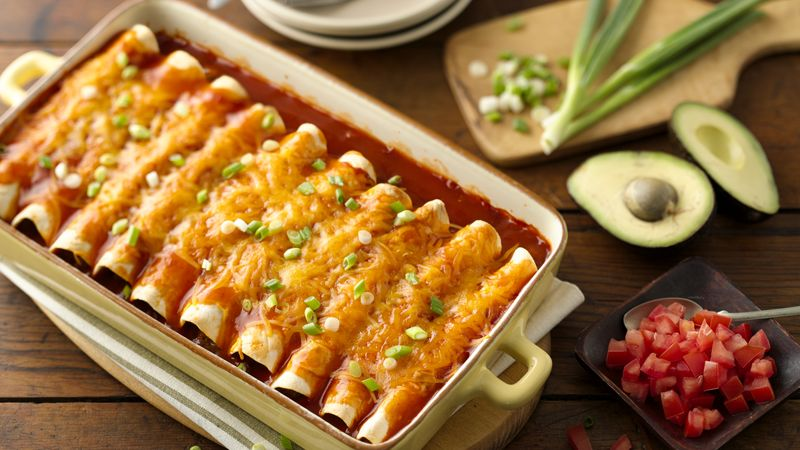

Enchiladas

Description
"This chicken enchilada recipe was actually one of the first-ever posts
that I shared here on Gimme Some Oven back in 2009.
And now, more than a
decade later, it still continues to be one of the recipes I make most
often for dinner here in our house —
and one of the recipes that our
readers make most often too! I'm so happy you all continue to enjoy it!
Ingredients
- Chicken
- Onions
- Beans
- Tortillas
- Cheese
- Enchilada Sauce
- Heat oven to 375°F. Spray 13x9-inch (3-quart) baking dish or pan with cooking spray.
- In 10-inch nonstick skillet, cook beef over medium-high heat 5 to 7 minutes, stirring occasionally, until thoroughly cooked; drain. Stir in 1/2 cup of the enchilada sauce and the chiles.
- Spread 1/2 cup of the enchilada sauce evenly in baking dish. Spread 1/4 cup beef mixture down center of each tortilla; sprinkle with 1 tablespoon cheese. Wrap tortillas tightly around filling, placing seam side down in baking dish. Top with remaining enchilada sauce. Sprinkle with remaining cheese.
4
- Bake 20 to 25 minutes or until hot and bubbly. Let stand 5 minutes before serving.